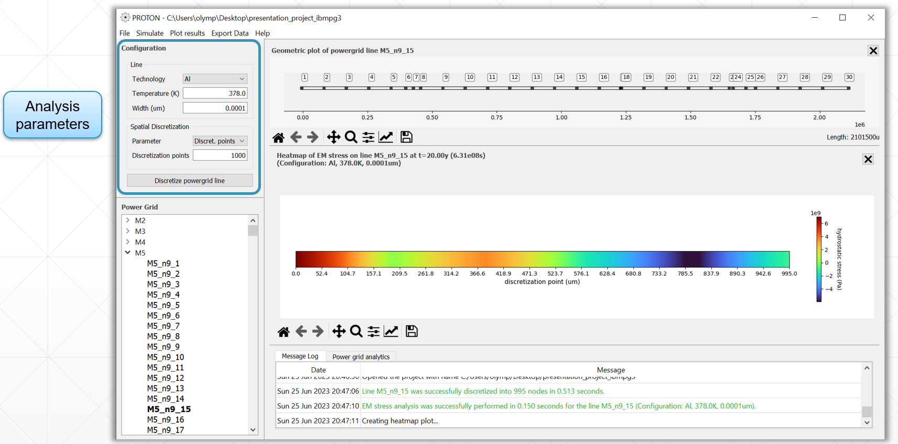
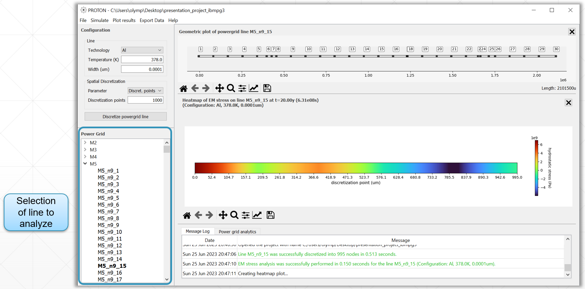
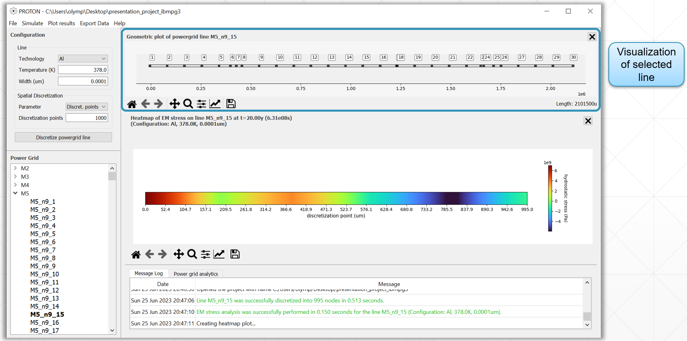
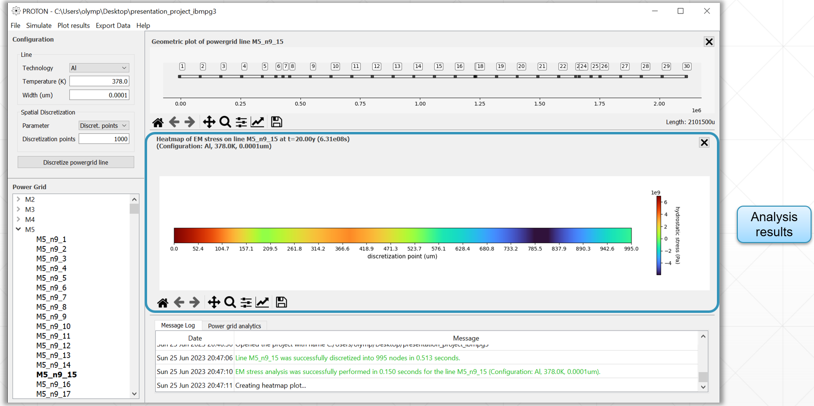
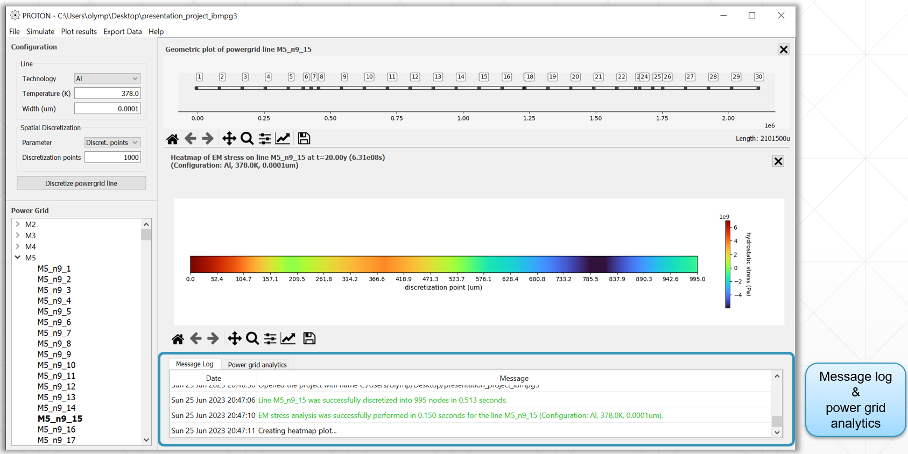

Table of contents:
The configuration panel where we set the analysis options like the technology of the power grid line, the temperature and the width. Also, the discretization of the line is set from this panel.
The power grid panel with all the parsed lines of the power grid hierarchically displayed of each metal layer.
After selecting a line, its geometric plot is automatically displayed for a better understanding of the segments that compose it.
After an analysis is performed, the corresponding plot is displayed in the center of the screen.
On the bottom of the main window, there is a space for the message log and the statistics of the analyzed powergrid.
